| 快捷键 | 说明 |
|---|---|
Ctrl + X |
剪切一行 |
Ctrl + Y |
删除一行 |
Ctrl + D |
复制一行 |
Ctrl + Alt + O |
优化包的导入 |
Double shift |
查找某个文件 (有时候会无法自动获得焦点) |
Ctrl + N |
查找类 |
Ctrl + Shift + N |
查找文件 |
Alt + ←/→ |
在 Tab 间切换 |
Ctrl + F4 |
关闭 Tab |
Shift + F6 |
重命名 |
Ctrl + Shift + A |
搜索某个命令 |
Alt + Insert |
生成各种方法 |
Ctrl + F2 |
停止 |
Ctrl + F12 |
显示所有方法 |
Ctrl + Q |
显示快捷帮助文档 |
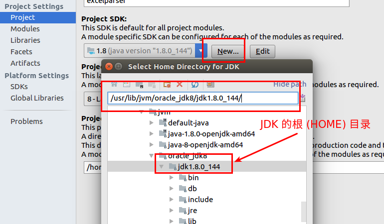
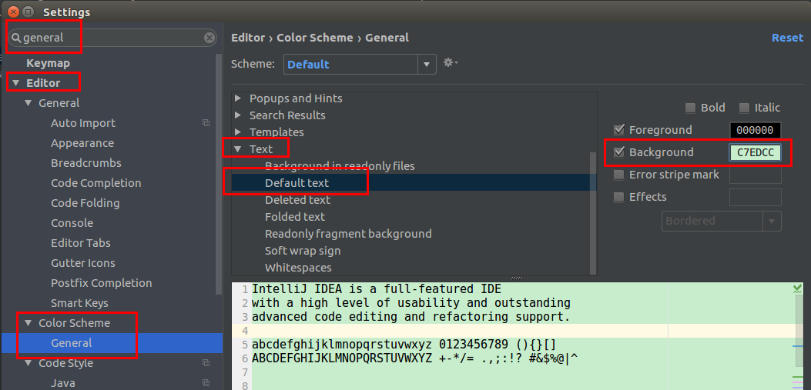
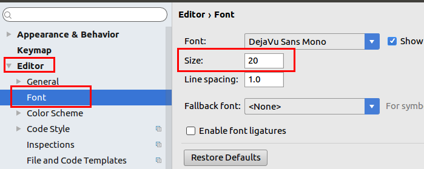
System.getProperty 参数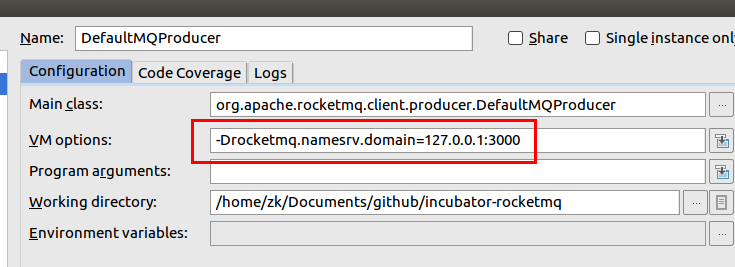
使用这个接受参数:
1 | String wsDomainName = System.getProperty("rocketmq.namesrv.domain", DEFAULT_NAMESRV_ADDR_LOOKUP); |
默认按下 Ctrl + F 是含有正则表达式的，所以如果想要搜索 send(Message msg) 这样的字眼，那就得需要将括号进行转义处理:
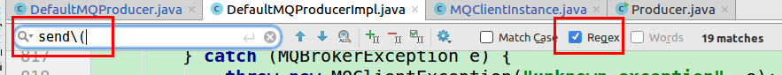
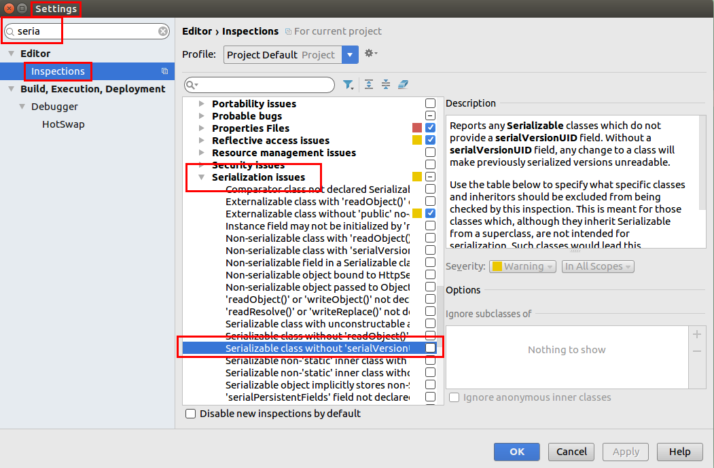
设置上这个之后，IDEA 还是不会自动添加序列化 ID，但是当你在类上按下 Ctrl + Enter 的时候，它可以提示你添加序列化 ID 了。
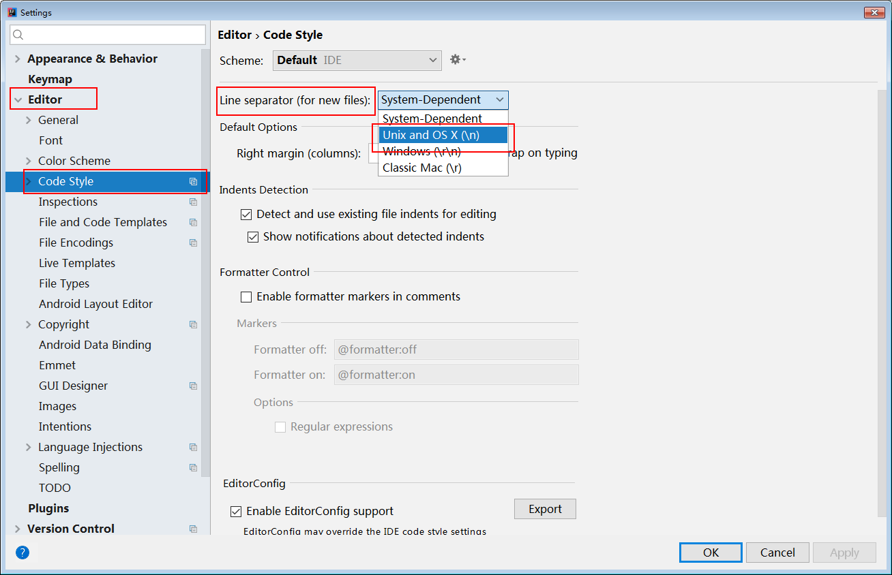
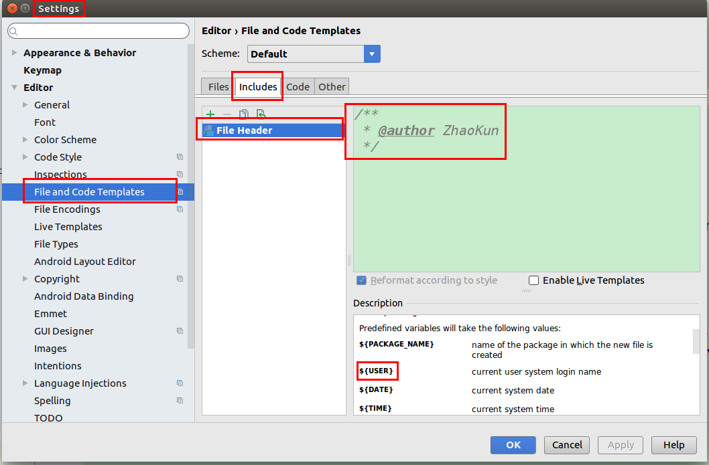
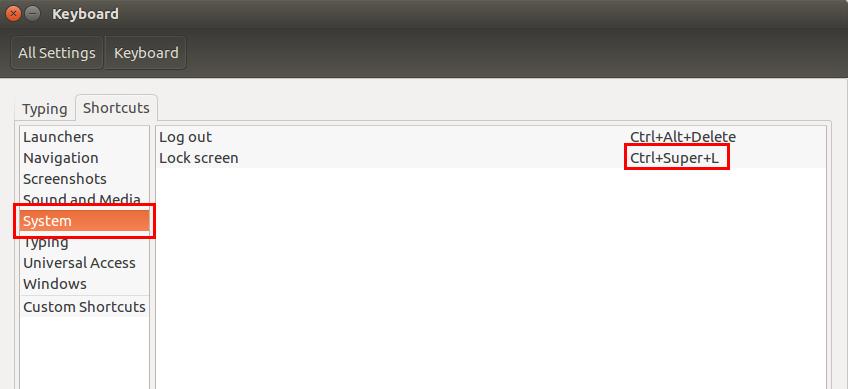
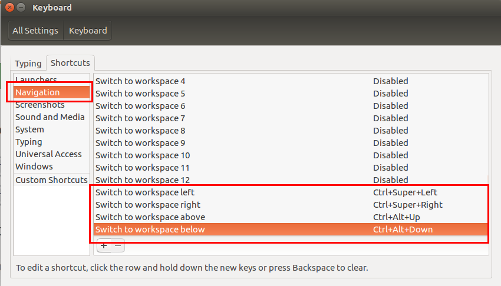
Ctrl + [ and Ctrl + ] to navigate to a code block’s start and end.Ctrl + Shift + M to navigate between the start and end of a code block.Function 所在的实现Ctrl + B
删除 .idea 目录结构,然后重新打开这个项目
ALT + SHIFT + ↑ALT + SHIFT + ↓通过安装 PlantUML 来让 idea 支持绘制时序图， Ubuntu 系统需要安装:
1 | sudo apt-get install graphviz |
才能正确显示
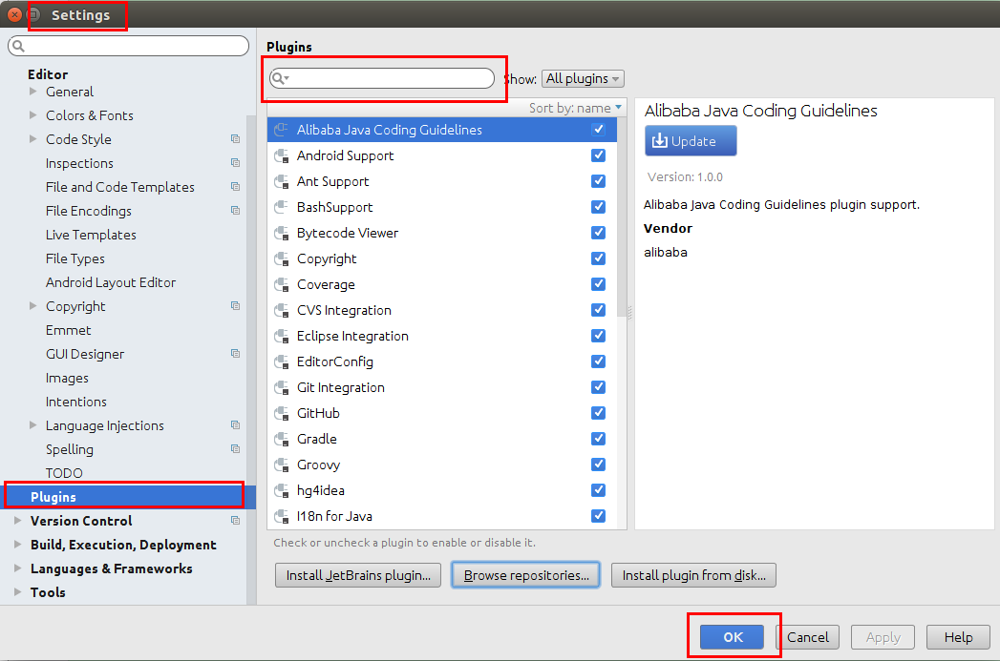
Find Usage注解类的 Find Usage 是无法找到的，在 idea 中直接 Find Usage 这个 @Select 注解是无法找到相关使用的:
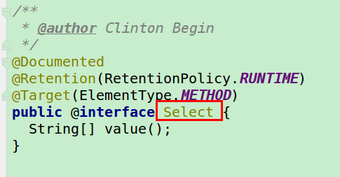
目前想到的一个暂时解决方案就是使用 grep 来搜索:
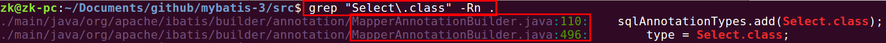
1 | # 打开代码类 |
Eclipse 是双击打断点
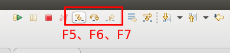
这三个按钮的意思是:
1 | F3 |
快捷键的网站
1 | # 快捷窗口查看 |
另外一种方法是按下 F4 按钮:
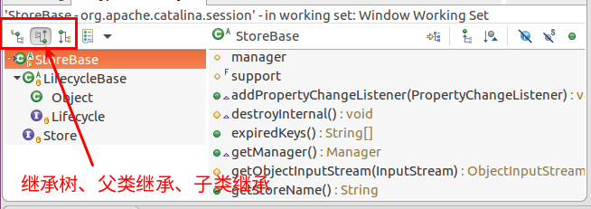
1 | Alt + ← |
选中右击 -> “Open Call Hierarchy”
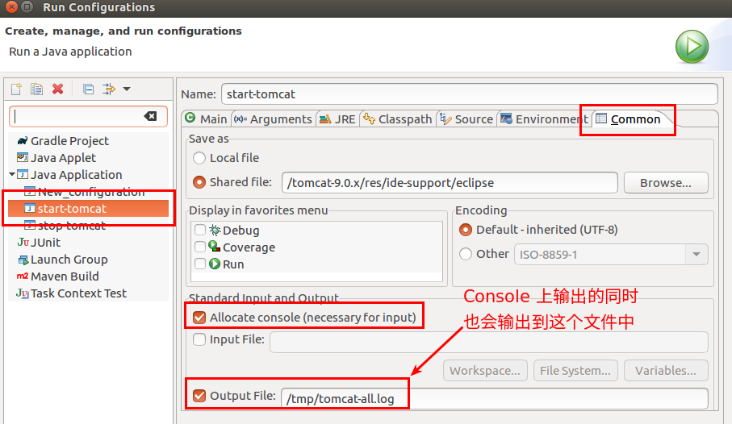
1 | Alt + N, S |
或者，按住 Ctrl 键，鼠标指向方法名，“Open super implementation”